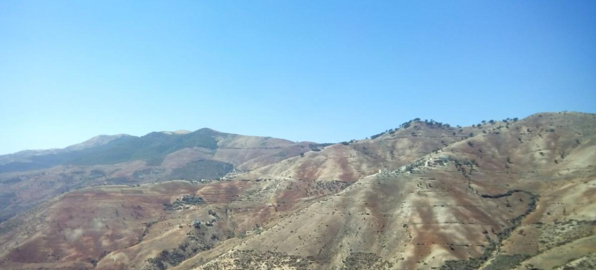

Over Al-Hoceima & Bni Bouayach
Gelegen in het noorden van Marokko, vormen Al-Hoceima en Bni Bouayach samen een fascinerende combinatie van kust- en berglandschappen. Al-Hoceima, gelegen aan de Middellandse Zee, staat bekend om zijn prachtige stranden en ontspannen sfeer, terwijl Bni Bouayach, genesteld in het Rifgebergte, bezoekers aantrekt met zijn adembenemende natuur en traditionele Berberse cultuur.
Bezienswaardigheden
Beide steden bieden een rijke diversiteit aan attracties, van natuurlijke wonderen tot culturele hoogtepunten.
- Plage Quemado (Al-Hoceima): Een schilderachtig strand met kristalhelder water, ideaal voor ontspanning en watersporten.
- Nationaal Park Al-Hoceima: Een beschermd natuurgebied met kliffen, stranden en unieke flora en fauna.
- Rifgebergte (Bni Bouayach): Panoramische uitzichten en eindeloze wandelroutes maken dit een paradijs voor natuurliefhebbers.
- Lokale souks (Bni Bouayach): Authentieke markten waar je handgemaakte ambachten, verse producten en traditionele tapijten kunt vinden.
- Port d'Al-Hoceima: Een pittoreske haven, perfect om de lokale vissersactiviteiten en de ontspannen sfeer te ervaren.
Wat te doen?
Al-Hoceima en Bni Bouayach bieden talloze mogelijkheden voor avontuur, ontspanning en culturele ontdekking.
In Al-Hoceima
- Geniet van snorkelen en duiken in het kristalheldere water van de Middellandse Zee.
- Maak een boottocht om de verborgen baaien en kliffen te verkennen.
- Ontdek de lokale keuken in de vele visrestaurants langs de kust.
In Bni Bouayach
- Verken de traditionele Berberse dorpen en leer over de rijke cultuur van de Rif-regio.
- Ga wandelen of picknicken in de valleien van het Rifgebergte.
- Bezoek lokale festivals en markten om unieke handwerken te kopen.
Waarom kiezen voor deze regio?
Al-Hoceima en Bni Bouayach zijn een perfecte bestemming voor iedereen die op zoek is naar een mix van natuurlijke schoonheid, cultuur en ontspanning. Van de serene stranden van Al-Hoceima tot de majestueuze bergen van Bni Bouayach, deze regio heeft voor ieder wat wils.